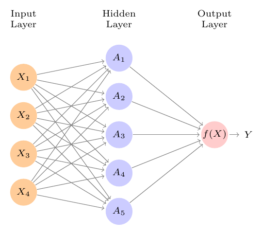
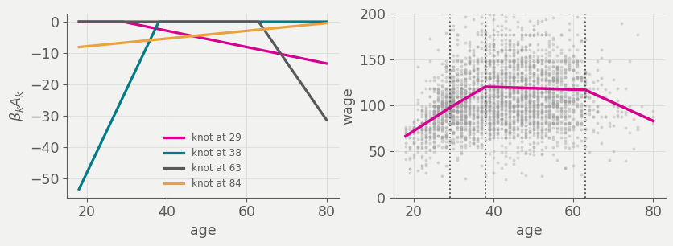
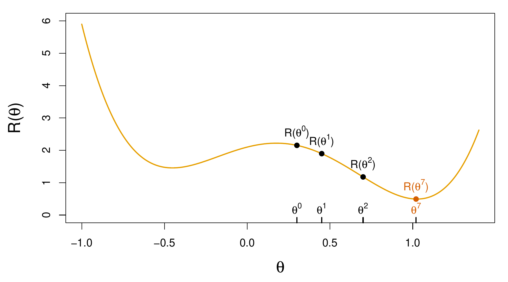
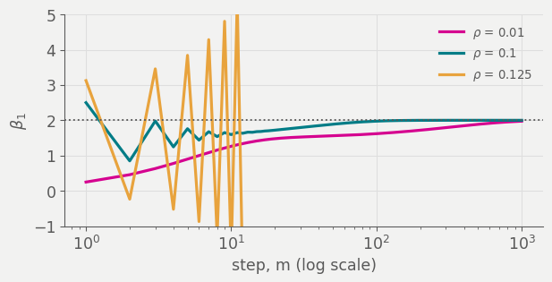
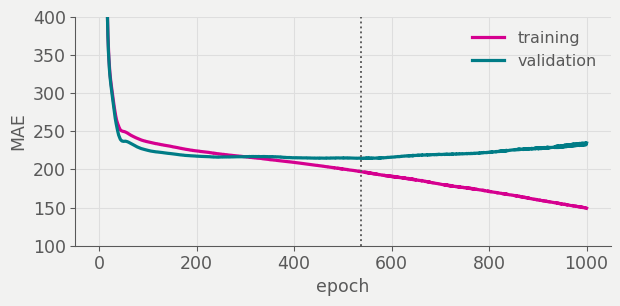

A basis function, a transformation of \(x\) chosen before the model is fit. Polynomials use \(b_k(x_i) = x_i^k\), step functions use \(I(c_k \leq x_i < c_{k+1})\), and linear splines use \((x_i - \xi_k)_+\) with the knots \(\xi_k\) picked in advance.
Once the \(b_k\) are fixed, the model is linear in \(\beta_0, \dots, \beta_K\) and least squares fits it. A neural network estimates the basis functions from the data along with the \(\beta\)s.
Single layer networks
Feed-forward neural network

ISLP Figure 10.1. A network with \(p = 4\) inputs in the input layer, \(K = 5\)hidden units in the hidden layer, and one output, \(f(X)\), in the output layer.
How many arrows go into the hidden layer, and how many come out of it?
A linear combination of the \(p\) inputs, with an intercept \(w_{k0}\) and weights\(w_{k1}, \dots, w_{kp}\) for hidden unit \(k\). These are the arrows into the hidden layer.
The activation function\(g\), chosen in advance, applied to that linear combination. The result, \(A_k = h_k(X)\), is the \(k\)th activation: a basis function estimated from the data.
Adding two nonlinear transformations of linear combinations produced an interaction, without \(X_1X_2\) being supplied as a predictor. With \(g(z) = z^2\) every network is a quadratic in \(X\).
This is an advantage, like with our trees so far neural nets can include interactions without having to specifically specify them
Learned knots

A single layer network with one input, age, and \(K = 4\) ReLU units, fit to wage for the 3000 workers in Wage by gradient descent. Left: each unit’s contribution \(\beta_kA_k\) (one unit bends past age 80). Right: the fitted \(f\), with dotted lines at the knots.
With one input, unit \(k\) is \((w_{k0} + w_{k1}x)_+\), which bends at \(x = -w_{k0}/w_{k1}\). A ReLU network is a linear spline whose knots are estimated along with the slopes.
Counting parameters
How many parameters does a network with \(p\) inputs and \(K\) hidden units have?
\[K(p + 1) + (K + 1)\]
\(K(p + 1)\) in the hidden layer, and \(K + 1\) in the output layer.
Our first example, \(p = 4\) and \(K = 5\): \(5 \times 5 + 6 = 31\)
Every parameter, \(\beta_0, \dots, \beta_K\) and \(w_{10}, \dots, w_{Kp}\), stacked into one long vector \(\theta\). For Hitters with \(K = 50\), \(\theta\) has 1051 entries.
The network’s prediction for observation \(i\). \(R(\theta)\) is half the RSS. The \(\frac{1}{2}\) and the \(\frac{1}{n}\) of the MSE only rescale it, so all three have the same minimizer.
Nonconvex objective

ISLP Figure 10.17. A nonconvex \(R(\theta)\) for a single parameter \(\theta\), with a local minimum at \(\theta = -0.46\) and the global minimum at \(\theta = 1.02\). Gradient descent from \(\theta^0\) reaches the global minimum in 7 steps.
Least squares for linear regression has one minimum and a formula for it. What changes when \(R(\theta)\) looks like this?
There is no closed formula and possibly many minima. We fit networks using slow learning (many small downhill steps) like we used for boosting.
The gradient, the vector of partial derivatives \(\partial R/\partial\theta\) evaluated at the current guess \(\theta^m\). It points in the direction in which \(R\) increases fastest, so the minus sign steps downhill.
The learning rate, a small positive number. A small enough \(\rho\) guarantees \(R(\theta^{m+1}) \leq R(\theta^m)\), and a smaller \(\rho\) requires more steps.
Start from a random guess \(\theta^0\) and repeat until \(R\) stops decreasing. torch computes the gradient for us, by backpropagation, which we will talk about next class.
A toy example
x
y
1
1
2
3
3
5
4
7
Fit \(y = \beta_0 + \beta_1x\) by gradient descent on the MSE.
rho is the learning rate \(\rho = 0.01\). b0 and b1 are the starting guess \(\theta^0 = (\beta_0, \beta_1) = (0, 0)\).
2
range(1000) takes 1000 gradient descent steps, indexed by m.
3
resid holds the four residuals \(y_i - \beta_0 - \beta_1x_i\) at the current guess, the piece both partial derivatives share.
4
grad_b0 and grad_b1 are \(\partial L/\partial\beta_0\) and \(\partial L/\partial\beta_1\) from the previous slide, with np.mean doing the \(\frac{1}{n}\sum_i\).
5
Both parameters move a step of size rho against their gradient, in one assignment so that grad_b1 is computed from the old b0.
(-0.925, 1.974)
The four points lie on the line \(y = -1 + 2x\). After 1000 steps, how close are we? What would you change?
Learning rate

\(\beta_1\) over 1000 gradient descent steps on the toy data, from \((0, 0)\), for three learning rates, with the steps on a log scale. The dotted line is the least squares estimate, \(\hat{\beta}_1 = 2\).
What goes wrong when \(\rho\) is too small? When it is too large?
ISLP Section 10.6 predicts Salary, in thousands of dollars, from the 19 predictors for the 263 players with a recorded salary, and holds out a third of them as a test set.
Least squares: 20 parameters
Lasso, with \(\lambda\) chosen by 10-fold CV: at most 20
A single layer network with \(K = 50\) ReLU units: 1051
Average over the \(n\) test players. ISLP Table 10.2 reports a test MAE of 254.7 for least squares, 252.3 for the lasso, and 257.4 for a network with \(K = 64\).
X holds the 19 Hitters predictors, with 0/1 columns for League, Division and NewLeague, and y is Salary in thousands of dollars rather than log salary, as in ISLP Section 10.6. test_size=1/3 holds out 88 of the 263 players, leaving 175 in X_train and y_train.
2
LinearRegression fits least squares on the 175 training players, with 20 parameters.
3
make_pipeline standardizes the predictors and then fits the lasso. LassoCV chooses \(\lambda\) by 10-fold CV on the training players, with the folds fixed by KFold(10, shuffle=True, random_state=363).
4
Each model predicts the 88 test players, and np.mean(np.abs(...)) is the test MAE, rounded to one decimal place by round(..., 1) and stored in the dictionary mae.
train_test_split sets aside a quarter of the 175 training players as a validation set, X_val and y_val, for deciding when to stop. The network is fit to the other 131 players, X_fit and y_fit.
2
StandardScaler learns each predictor’s mean and standard deviation from X_fit only, so neither the validation nor the test players leak into the scaling. Standardized inputs keep every \(w_{kj}X_j\) on a similar scale.
3
to_tensors standardizes a set of predictors and converts both arrays to tensors, the torch version of a NumPy array. dtype=torch.float32 uses the single precision torch expects, and .reshape(-1, 1) makes the response a column with one row per player.
4
data holds the training, validation and test tensors, keyed by name.
torch.manual_seed(363)net = nn.Sequential( nn.Linear(19, 50), nn.ReLU(), nn.Linear(50, 1),)sum(p.numel() for p in net.parameters())
1
torch.manual_seed(363) fixes the random starting weights \(\theta^0\), so the network starts from the same guess every time the deck renders.
2
nn.Sequential chains layers, passing each layer’s output to the next one as input. The result, net, is a function from 19 inputs to one prediction.
3
nn.Linear(19, 50) computes the 50 linear combinations \(w_{k0} + \sum_j w_{kj}X_j\), one per hidden unit, from the 19 inputs. It has \(50 \times 19\) weights and 50 biases.
4
nn.ReLU() applies \(g(z) = (z)_+\) to each of the 50 linear combinations, giving the activations \(A_1, \dots, A_{50}\).
5
nn.Linear(50, 1) is the output layer, \(\beta_0 + \sum_k\beta_kA_k\), with 50 weights and one bias.
6
net.parameters() lists the four parameter tensors, and p.numel() counts the entries in each one: \(1000 + 50 + 50 + 1 = 1051\).
1051
Training loop
optimizer = torch.optim.SGD(net.parameters(), lr=1e-4)loss_fn = nn.MSELoss()X_fit_t, y_fit_t = data["training"]history = {name: [] for name in data}for epoch inrange(1000): optimizer.zero_grad() loss = loss_fn(net(X_fit_t), y_fit_t) loss.backward() optimizer.step()with torch.no_grad():for name, (X_t, y_t) in data.items(): history[name].append(float((y_t - net(X_t)).abs().mean()))
1
torch.optim.SGD updates the parameters of net by gradient descent with learning rate lr=1e-4, which is \(\rho\). Here every step uses all 131 training players, so this is the plain gradient descent from the previous section.
2
nn.MSELoss is the training MSE, \(\frac{1}{n}\sum_i(y_i - f_\theta(x_i))^2\), which has the same minimizer as \(R(\theta)\).
3
One pass through the training data is an epoch. With every player in every step, an epoch is one gradient descent step, so this takes 1000.
4
optimizer.zero_grad() clears the gradient left over from the last step, since torch adds new gradients to old ones.
5
net(X_fit_t) predicts the 131 training players, and loss_fn compares those predictions with y_fit_t.
6
loss.backward() computes \(\nabla R(\theta^m)\), the partial derivative of the loss with respect to all 1051 parameters, by backpropagation.
7
optimizer.step() moves every parameter against its gradient, \(\theta^{m+1} \leftarrow \theta^m - \rho\nabla R(\theta^m)\).
8
torch.no_grad() turns off gradient tracking while the MAE is recorded for the training, validation and test players after each step, in history.
Early stopping

MAE of Salary on the 131 training players and the 44 validation players after each of 1000 gradient descent steps. The dotted line marks the epoch with the smallest validation MAE.
Why choose the stopping epoch with the validation players instead of the test players?
Stopping where the validation error is smallest is early stopping. Choosing the epoch with the test set would tune the model on the test set, which can overfit to the test set